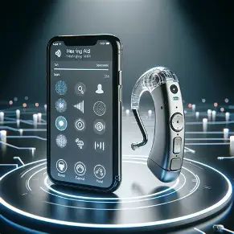

Heart rate
Stable
72 bpm
Connected care
AI-assisted · non-invasive-first concept
The aim is simple and patient-centered: bring clinically validated biofluid insights into everyday health conversations without asking people to rely on invasive testing when a lower-burden option is appropriate. By combining a validated sample result with signals from smart shoes and hearing aids, the app helps people understand change, review trends, and share better context with their care team. The goal is to add clarity, not replace professional judgement or confirmatory diagnosis.
Simulated values for demonstration only; not a diagnosis.
Purpose
The solution exists to help people understand meaningful health changes earlier, without making a diagnosis from a single signal or forcing unnecessary invasive testing.
Use
Validated biofluid results can be reviewed alongside movement, hydration, and device-use context to build a more complete picture of how a person is doing.
Driven by need
Where clinically appropriate, the aim is to reduce avoidable needle-based or tissue-based sampling while preserving human review and confirmatory testing when needed.
Solution
AI can summarize data quality, trends, and uncertainty in everyday language so individuals can prepare better questions and providers can review a clearer handoff.
Connected care

Individual dashboard
A purpose-driven concept for bringing a validated biofluid result together with daily signals from smart shoes and hearing aids, to improve understanding without replacing clinical review.
Simulated result from a hypothetical, validated assay. A marker trend is a signal to interpret—not a diagnosis.
Steps, gait pattern, and foot-pressure balance add movement and mobility context.
Wear time and optional sound-exposure context sync through the paired app.
An appropriately validated model could summarize selected signals, data quality, and uncertainty against an agreed baseline. It must not diagnose or recommend treatment on its own; concerning changes need professional review.
A condition-specific assay measures selected biomarkers from a suitable sample; collection may be non-invasive or minimally invasive.
Smart shoes can contribute movement signals; hearing aids can support accessible prompts and, where available, optional device context.
A validated model could flag trends and uncertainty for review. The person sees what was measured and what the result cannot tell them.
A care professional interprets the result and decides whether follow-up, standard tests, imaging, or biopsy is appropriate.
Designed around daily life
For individuals who want a clearer view of personal trends and an easier way to discuss them with their care team.
Bring selected readings, activity, and personal notes into one view. Reviewing trends can help people prepare questions and share a concise update at appointments.
Keep a simple record of daily progress between follow-ups. Mobility context from smart shoes and agreed measurements may help the person and care team discuss recovery changes.
Connect movement signals with accessible app or spoken reminders, so health information can fit more naturally into daily routines and individual communication preferences.
This concept could become a non-invasive first-line screening or monitoring option for specific conditions only after clinical validation. It is not a complete alternative to medical diagnosis or biopsy when those are indicated, and it must not delay care.
Provider interoperability
Explore a local scanner simulation and mock receiver, plus a separate opt-in submission to BIGFIX’s synthetic FHIR R4 test record. No physical scanner or real clinical system is connected.
Scanner simulation · local only
The local mock receiver makes no network requests. The separate BIGFIX option sends only synthetic dashboard values after explicit approval. Do not enter real patient information.
Review the demo notice and authorize the simulation to begin.
Synthetic placeholder values only—not a validated test result or clinical guidance.
FHIR-shaped demo records kept in this browser tab only.
No readings received.
External test service · synthetic dashboard values only
With your approval, send the current demo metrics to BIGFIX’s readings API for its synthetic test record. This sends data over the internet; it is separate from the local mock EHR above.
BIGFIX demo record: Margaret Ellis · BFX-4E7A21C9
No new readings have been sent from this page session. Approval is required to send synthetic values; server authorization may also be required.
The individual verifies their identity, selects a participating provider, and grants scoped data-sharing permission. Access can be revoked.
The companion app packages supported biofluid results and shoe or hearing-aid signals with timestamps, units, and device/source details.
An approved, encrypted provider API can send mapped health data using standards such as FHIR, with authorization supported by the provider’s integration.
The provider system matches the patient and routes permitted data into its record workflow. The care team reviews it under the provider’s policies.
Integration target
Training Hospital Sandbox · demo onlyMock EHR receiver
Not active